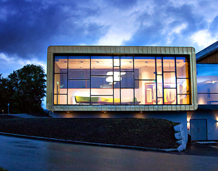
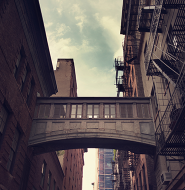

Most popular posts

Vanglo House By LWPAC in Canada

Sunrise Expanse Hotel in USA

Stargaze Resort & Spa in USA

Royal Blossom Hotel & Spa in USA

Sunset Shack Hotel in Spain

Glorious Expanse Hotel in France